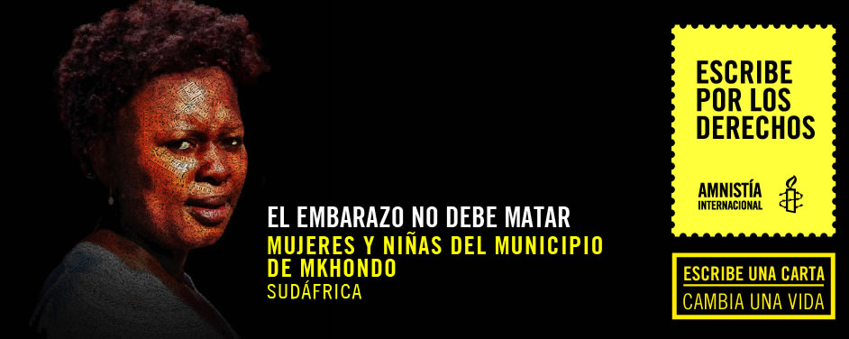

<script src="transfer.js"></script>
<section>
    <div class="banner">
        <div class="wrap">
            <figure>
                
            </figure>
        </div>
    </div>
    <div class="wrap big">
        <article>
            <div class="wrap">
                <h2 class="tleft">Tus palabras pueden cambiar la vida de 
las mujeres y niñas de Mkhondo:</h2>
                <div class="cont_left">
                    <p>
                        Las mujeres embarazadas y las madres primerizas del municipio de Mkhondo, en el este de Sudáfrica, mueren innecesariamente porque no reciben una atención de la salud fundamental. Las tasas de mortalidad materna son demasiado altas, y Mkhondo es uno de los distritos más deficientes del país en materia de salud. 
                    </p>
                    <p>
                        Para reducir el riesgo de morir, las mujeres y niñas embarazadas necesitan atención médica desde las primeras etapas del embarazo. Pero muchas evitan las clínicas porque temen la falta de intimidad y confidencialidad de las pacientes. Otras se desaniman porque las enfermeras gritan a las niñas por quedarse embarazadas demasiado jóvenes. Es más, muchas no pueden llegar a las clínicas porque el transporte público es escaso o demasiado caro. 
                    </p>
                    <p>
                        Para empeorar las cosas, muchas mujeres y niñas no tienen conocimiento de asuntos relativos a la salud materna ni de los beneficios de la atención prenatal. Otras muchas procuran conseguir consejo e información sobre métodos anticonceptivos, y no son pocas las que tienen dificultades para que sus parejas utilicen el preservativo. El resultado de todo ello son embarazos no deseados y el incremento del riesgo de contraer el VIH.
                    </p>
                    <p>
                        Todo el distrito adolece de una falta crónica de personal médico con la debida capacitación. Esto significa que las mujeres y niñas tienen que soportar largas esperas para ser atendidas por unas enfermeras agotadas y estresadas. Para agravar todos estos problemas, la extrema escasez de ambulancias a menudo deja a las mujeres embarazadas varadas en situaciones de emergencia.
                    </p>
                    <p>
                        Tu carta se unirá a miles más que enviaremos al 
Presidente del Equipo de Trabajo Interministerial de prestación de servicios, Pravin Gordhan para pedir:
                    </p>
                    <p>
                        Prioridad para mejorar la atención de la salud de las mujeres y niñas del municipio de Mkhondo.
                    </p>
                </div>
                <div class="cont_right">
                    <iframe src="formulario.html" seamless="seamless" scrolling="no" frameborder="0" style="border:0; overflow:hidden;" width="100%" height="600"></iframe>
                </div>
                <div class="clear"></div>
            </div>
        </article>
    </div>
    <div class="yellow"></div>
</section>